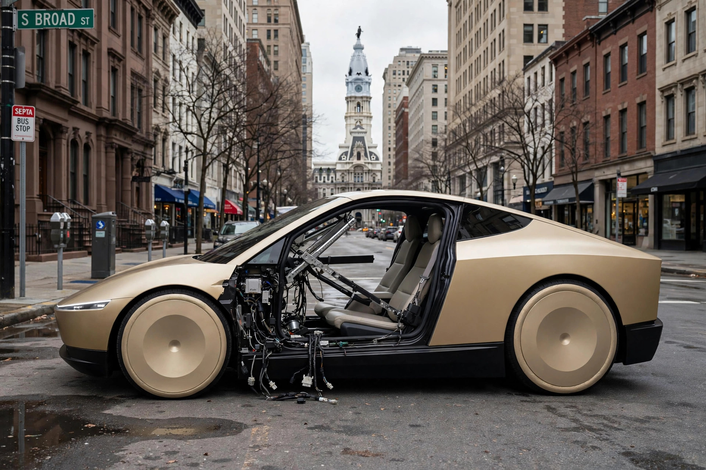

A Cybercab Lost Its Door in Philadelphia; the Federal Database May Never Know

A gold Tesla Cybercab got into a crash on South Broad Street in Philadelphia this week and came out of it missing the entire outer panel of its driver-side door.[1] The skin is just gone. Inner frame, window regulator, wiring, all exposed to the street. Under NHTSA's crash reporting rules, this incident may never appear in any federal database, and the reason is arithmetic, not conspiracy.
I ran the numbers, then I ran them again, and they didn't get better. NHTSA's Standing General Order sets two different reporting thresholds, and which one applies depends on a classification the manufacturer makes itself. If an automated driving system (Levels 3 through 5) was engaged within 30 seconds of the crash, the company must report it even for property damage above a set threshold.[4] If it was Level 2 driver assistance, reporting is required only for a fatality, a hospital transport, an airbag deployment, or a struck pedestrian or cyclist, and no injuries have been reported in Philadelphia. So the door panel lying on Broad Street sits, legally speaking, below the federal event horizon.
The question of who decides which threshold applies has a short answer: Tesla does. Pennsylvania requires a certificate of compliance from PennDOT to operate a highly automated vehicle at Level 3 or above, and seven companies hold one. Waymo is on the list, cleared for Philadelphia with a driver on board. Tesla is not.[1] A PennDOT spokesman has confirmed that Cybercabs spotted in the state, including earlier Pittsburgh sightings, were operating at Level 2, with a human legally responsible.[3] About 35 gold Cybercabs have been staged in Devon, a suburb thirty minutes from Center City, since mid-September.[3] At Level 2, the federal database only hears about the crashes that hurt someone badly enough.
The panel itself is a separate engineering argument. Tesla doesn't paint the Cybercab; its body panels are molded plastic, color mixed into the material, joined to a backing piece and held by fasteners reached from inside.[1] Underneath, photos show a crossbar running the length of the door for side-impact protection, and the glass survived intact.[2] Optimistic read: a sacrificial skin that bolts back on beats a steel door, a body shop, and a paint booth. Pessimistic read: a panel that detaches whole in a low-speed bump becomes debris on a city street. The photos can't settle it, and I won't pretend they can.
Here is the part that should bother anyone who works with crash data. While this car was shedding body panels in a state where it holds no automation permit, NHTSA had already escalated its scrutiny of the Cybercab's street legality to a Special Order dated September 10, demanding sworn answers to 21 requests by September 30, with civil penalties up to $139 million for false or incomplete responses.[5] The order probes how Tesla self-certified a vehicle with no steering wheel, pedals, or mirrors, including FMVSS No. 135, which states service brakes "shall be activated by means of a foot control."[5] A vehicle whose compliance is under sworn federal review can also produce crashes that never enter the federal record. Both things are true at once, and neither requires a cover-up.
The strongest case against making a fuss: fault is unknown, a human may have drifted into the Cybercab's lane, the Level 2 classification matches what PennDOT itself confirmed, and a low-speed fender-bender with no injuries arguably deserves no federal attention at all. Fair. But the dataset I study every week, the one researchers and regulators use to decide whether these vehicles are safe, is built from exactly these classification decisions. Absence of a crash in the database is not evidence the crash didn't happen; it is evidence of a threshold.
What to do with this: if you see a gold Cybercab in Philadelphia, treat it as a car with a human legally responsible for it, because per PennDOT that is what it is. If you read NHTSA's automated-vehicle crash data, read the Level 2 caveat first: property-damage-only crashes are not in it, and the 207 Autopilot and FSD crashes Tesla reported in a single month earlier this year are the ones that cleared the bar, not the ones that happened.[1] And the Special Order answers were due September 30. The docket is where the interesting numbers will show up next.
Sources & References
- Electrek, “Tesla Cybercab loses its entire door panel in a Philadelphia crash,” Oct 7, 2026. electrek.co
- Not a Tesla App, “Tesla Cybercab Crash in Philadelphia Exposes Door Internals,” Oct 7, 2026. notateslaapp.com
- Basenor, “Cybercab Spotted in Pennsylvania: 5 Details That Matter.” basenor.com
- NHTSA, Standing General Order on Crash Reporting. nhtsa.gov
- WebProNews, “NHTSA Puts Tesla's Cybercab on Notice: Self-Certification of Wheel-Free Robotaxi Faces Sworn Scrutiny,” Sept 2026. webpronews.com
- NHTSA, Fatality Analysis Reporting System (FARS). nhtsa.gov